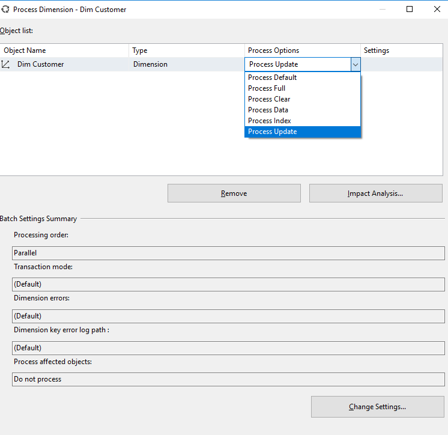

Processing Types For Dimension in SSAS
Processing model of SSAS Cube is quite interesting. Each step in the processing depends on the current state of the entity which we are processing and this affect other entities too. There are various options related to the processing of the dimensions which are as followings:
· Process Default: Here SSAS Engine will do minimum work to bring the dimension to a valid state so that it can be used by others.
· Process Full:as its name suggests it rebuild the whole object from scratch. All the existing data and aggregations are dropped.
· Process Clear: It discard the state of the existing object. It also makes the state of all other objects to invalid which is using this object.
· Process Data:In this option for dimension it rebuilds only the data part of the dimension. Which includes hierarchy and Attributes.
· Process Index: It rebuilds all the index related files for an attribute.
· Process Update: This one is interesting. It is kind of incremental dimension processing. It reads the whole data of dimension same as in Process Full. Then the valid question arises "how is it different from Process Full?" The difference is that it does not discard the current state of the object. It just checks if there is a change and then work according to that.
So there can be 3 types of changes that can occur:
Case 1: when a new member is included in the dimension then the existing data for that dimension within the cube is not dropped and the new member is simply added. The data for that new attribute is also calculated and added in the measure group.
Case 2: When an existing Member of dimension is updated in this case all the data and aggregation related to this dimension is dropped from the cube and Cube is moved to the invalid state. Then it is required to reprocess the dimension and the cube.
Case 3: When an existing Member is dropped then also same the same process is followed as in Case 2.
So this was all about the different processing option in the cube and how do they affect different objects related to them.